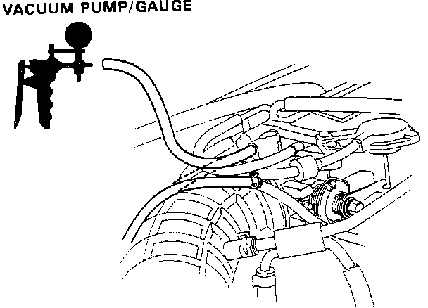
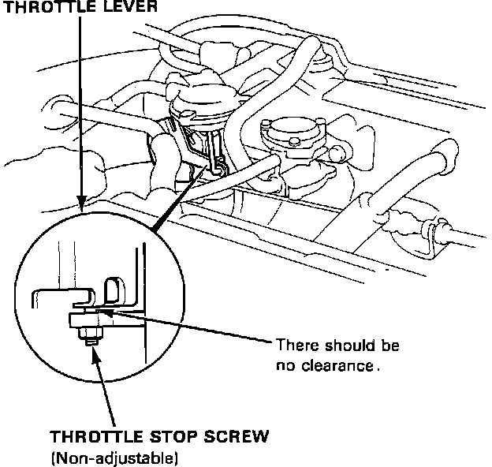

Throttle Body: Testing and Inspection
CAUTION: Do not attempt to adjust the throttle stop screw. It is factory set and should not be moved.1. START the engine and allow it to reach normal operating temperature, (cooling fan comes ON).
Throttle Body Adjustments:

2. Disconnect the vacuum hose (to the charcoal canister) from the top of the Throttle Body and connect a vacuum gauge to the Throttle Body at charcoal canister hose port.
3. Allow the engine to idle and check if the gauge indicates NO vacuum. There should be NO vacuum.
a. If there IS vacuum, check the Throttle Body, throttle cable and dashpot for proper adjustment and retest. Refer to "ADJUSTMENT PROCEDURES".
4. Check that vacuum IS indicated on the gauge when the throttle valve is opened slightly from idle.
a. If the gauge indicates NO vacuum when throttle valve opened, check the charcoal canister port for restriction. If the canister port is clogged, clean it with carburetor cleaner and retest.
5. STOP the engine and check that the throttle cable operates smoothly without binding or sticking.
6. If there are any abnormalities in the above steps, check for:
a. Excessive wear or play in the throttle valve shaft.
b. Sticky or binding throttle lever at full close position.
Throttle Stop Screw:

c. Proper clearance between throttle stop screw and throttle lever at full close position. Proper clearance is:
NONE
7. Replace the Throttle Body if there is excessive play in the throttle valve shaft or if the shaft is binding or sticking, refer to "COMPONENT REPLACEMENT AND REPAIR PROCEDURES".